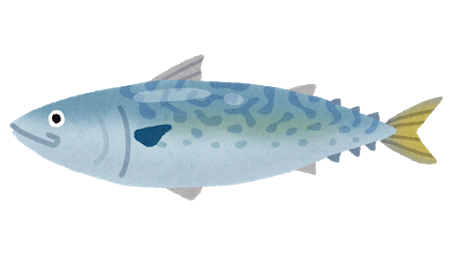
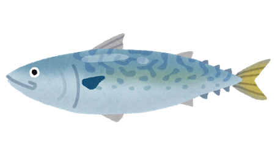

Terms of service
If you have a problem with any of these terms, they may be changed if discussed with me prior to paying for your commissioned piece.
general
- I might record the making process and post it on my youtube.
- Prices are subject to change based on demand.
- I have the right to reject any order that I do not feel comfortable making for any reason.
process
- I will notify you when I have started on your commission and you, therefore, lose the rights to a refund.
- During the process, I will utilize progress pictures to make revisions with you, so the figurine is just how you like!
- The time it takes to finish can vary, 2 days - 2 months depending on health, complexity of commission, other work, and more.
- If anything that may dely the process of sculpting/sending you the figurine happens, I will let you know asap.
- Once I finish, I will send you the package containing the completed figurine.
revisions
- If you wish for me to make a change you already approved, an additional fee is added based on my hourly wage.
copyright & usage
with the pictures of the finished figurine, I am allowed to:
- Promote myself with it everywhere
- Display it everywhere to my liking (website, social media, etc.)
- Post it wherever I want
the buyer is allowed to:
- Use the figurine for personal use (you can upload it on all your social media profiles, forums, etc.)
- claim the character as your own, but not the artwork itself. (unless you do not own the character :P)
- Use the artwork to promote yourself. You are not forced to give me credit when you post it but it is very appreciated.
- Use the artwork on your Youtube channel/in monetized videos if artwork itself is not the main subject for the earnings.
These are a copyright infringement:
- Reproducing/using the copyrighted artwork commercially (making money off it)
- Claiming the artwork as your own
customer happiness:
- I will do everything I can to make my customers happy! :D
- If you have a problem with anything, please tell me right away so we can find a solution together.
- I am willing to change some of my terms for you if you ask before I start on your commission.
(ex: if you don't want me to post the sculpture online)
What if my figurine arrives damaged?
The last thing I would want is for your figurine to be damaged in the mail,
so I take extra care to package it safely. However, it it manages to break despite
my efforts, you have these options:
You may have a full refund (including return shipping) if you are willing
to send it back to me. Then, I can fix the figurine and relist it. :D
Or, if you are happy to fix the figurine by yourself with what you have,
I can assist you over email, and will give you a discount code for the future. :D
refund/cancellation/returns:
- The buyer is not allowed a refund once I started working on the commission.
- If for any reason I am unable to start your commission you will receive a full refund.
- If you cancel your order before I started it, you can get a full refund.
- Returns are not allowed for custom figurines since they are made just for you
(unless the figurine arrives and was broken during shipping, then see the section above).
- If you are getting a refund, do not request a Paypal chargeback. I will transfer the money back to you myself.
-If you request a Paypal chargeback at any point when you were not allowed to ask for a refund you will lose all
beforementioned rights to the commissioned piece and I will have the full right to profit further from it in any
way. I will decline the chargeback and supply Paypal with our conversations in which we talk about the
commission as evidence that I have completed work for you. Furthermore, you will be blacklisted for
commissioning me again.
If the buyer breaks any of the points stated above they will lose all the beforementioned rights to the artwork
commissioned by me, and I will have the right to profit further from the commissioned
artwork in any way I see fit. If you have a problem with any of these statements, they may be
changed if discussed with me prior to paying your commissioned piece.
 
